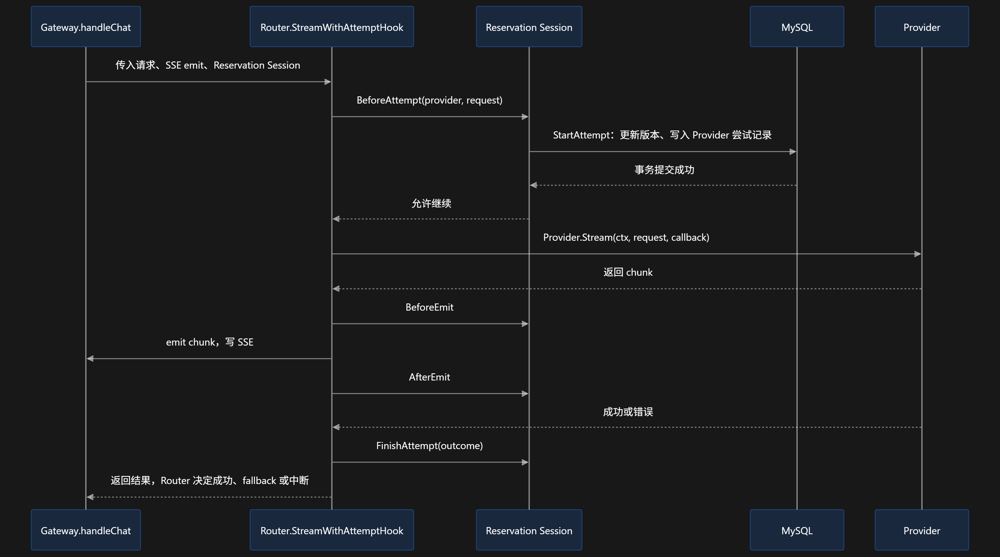

AgentMesh：Provider 调用、Attempt Hook 与取消传播
AgentMesh 项目展示 · 系列目录 · 8 / 12
以一次 Provider attempt 为单位追踪调用前记录、逐块回调、输出与结束处理，说明 fallback 和客户端取消如何作用于流式链路。
实现说明与运行记录基于 2026-09-26 更新的原稿。正文中的文件行号、实现状态与验证结果按该历史快照理解。
实现概览
- Provider 调用前先持久化 attempt，保留外部调用证据。
- BeforeEmit、实际 emit 与 AfterEmit 分别作用于不同的时点。
- 首块前可尝试备用路径，首块后按流中断处理，不替换已输出内容。
实现细节

三个必须记住的核心事实：
- attempt = 一次实际的 Provider 调用。primary 失败切 fallback，就是两次 attempt，各自在 MySQL
provider_attempts表里留下一行。 - 先落记录，再发外部调用。
BeforeAttempt写 MySQL 成功，才允许candidate.Stream(...)。反了就会出现"钱可能被扣了但系统不知道"。 - fallback 只在首块之前允许。一旦有任何 chunk 写进客户端 SSE，就不能再换 Provider——那会让一条回答混入两个模型的内容。
Gateway.handleChat（server.go:310-322）
↓ hooked.StreamWithAttemptHook(ctx, chat, emit, reservationSession)
Router.StreamWithAttemptHook（router.go:89）
for 每个 provider：
↓ hook.BeforeAttempt(ctx, providerName, request)
coordinatorSession.BeforeAttempt（coordinator.go:119）
↓ records.StartAttempt(...)
MySQL：UPDATE reservation version+1 + INSERT provider_attempts ← 一个事务
↓ candidate.Stream(ctx, request, chunkCallback)
每个 chunk：
hook.BeforeEmit → emit(chunk) [Gateway 写 SSE] → hook.AfterEmit
Provider 结束：
hook.FinishAttempt(ctx, providerName, outcome)
├─ 成功 → 结束整个请求
├─ ctx 取消 → outcome="cancelled"，结束
├─ 已出过 chunk → outcome="interrupted"，结束（不再 fallback）
└─ 首块前失败 → outcome="failed_before_first_chunk"，继续下一个 provider
全部失败 → ErrProvidersUnavailable
第一步：Gateway 如何把 session 交给 Router
server.go:310-324：
if reservationSession != nil {
hooked, ok := streamer.(router.HookedStreamer)
if !ok {
_ = reservationSession.Complete(request.Context(), quotaUnavailable, false)
completeTrace(session, quotaUnavailable, false)
writeJSONError(w, http.StatusServiceUnavailable, quotaUnavailable)
return
}
err = hooked.StreamWithAttemptHook(request.Context(), chat, emit, reservationSession)
} else {
err = streamer.Stream(request.Context(), chat, emit)
}
实际的调用顺序 :
tenant resolver 创建 router.Router
→ Gateway 取得它，变量类型是 Streamer
→ Reservation.Begin() 返回 reservationSession
→ Gateway 检查实际 Router 是否也支持 StreamWithAttemptHook
→ 支持，于是把 session 传进去
→ Router 调 BeforeAttempt
→ Router 调 Provider
Reservation 开启：
Begin 预留额度
→ StreamWithAttemptHook
→ StartAttempt 写 provider_attempts
→ Provider.Stream
Reservation 关闭：
普通 Stream
→ Provider.Stream
三个要点：
- 类型断言
router.HookedStreamer：Streamer是窄接口（只有Stream），HookedStreamer是可选增强接口（多一个StreamWithAttemptHook）。coordinatorSession实现了AttemptHook，所以只能走带 hook 的路径。 - 预留了额度但 Router 不支持 hook → 直接
Complete掉这笔 reservation 并返回 503。为什么？系统已经为这笔请求预留了额度，就必须知道 Provider 调用是否发生过。绕过记录直接调用，进程崩溃时就无法区分"调用了"和"没调用"，可能导致额度被错误释放。 - 没有 reservation 时走普通
Stream（它内部就是StreamWithAttemptHook(ctx, request, emit, nil)，见 router.go:85），mock/开发模式不受影响。
emit 就是请求处理专题 里看到的 Gateway 闭包：start() 懒启动 SSE header + writeSSE。它是 Gateway 交给 Router 的输出出口。
一、"Hook" 到底是什么？就是一个函数列表
Hook 不是什么高级概念，它就是一组函数，Router 在"特定时刻"挨个调用。
看 router.go:30：
type AttemptHook interface {
BeforeAttempt(ctx, providerName, request) error
BeforeEmit(ctx, providerName, chunk) error
AfterEmit(ctx, providerName, chunk) error
FinishAttempt(ctx, providerName, outcome) error
}
Go 的 interface 翻译成白话就是："我（Router）会在这些时刻，按这些函数签名调你"。别的什么都不管。
- 谁来实现这四个函数？
coordinatorSession（就是配额预扣专题 里Begin()返回的那个东西，coordinator.go:99）。 - 这四个函数内部干的活？全是普通代码：算一下字符数、写一次 MySQL。没有任何魔法。
所以整句话可以翻译成人话：
Router 在调 Provider 的几个关键节点上，"打几个电话"给 reservation，问："能继续吗？记录一下。" 电话打不通（函数返回 error），Router 就停下来，不继续。
谁持有 hook？ 看 server.go:313，Gateway 把 session 当 hook 传给了 Router：
err = hooked.StreamWithAttemptHook(ctx, chat, emit, reservationSession)
// 参数4就是 hook
没传 reservation 的时候（reservationSession == nil），走 streamer.Stream(...)，它内部就是调 StreamWithAttemptHook(ctx, chat, emit, nil) —— hook 是 nil，四个电话都不打，直接调 Provider。这就是为什么开发模式/mock 完全不受影响。
二、"能 Hook" 和 "不能 Hook" 是什么意思
就是有没有带 hook 参数的那个方法：
type Streamer interface { // 窄：只会调
Stream(ctx, request, emit) error
}
type HookedStreamer interface { // 宽：多一个带 hook 的入口
Streamer
StreamWithAttemptHook(ctx, request, emit, hook) error
}
Router 两个方法都实现了，所以它既是 Streamer 也是 HookedStreamer。
Gateway 在 server.go:314 做的事就一句：
hooked, ok := streamer.(router.HookedStreamer)
白话："你这个 streamer，会不会 StreamWithAttemptHook？"
- 会 → 走带记录的路径。
- 不会（
ok == false）→ 直接把这笔预留额度取消掉（Complete），返回 503，绝不绕过记录去裸调 Provider。
为什么？配额预扣专题 说过：已经扣了钱，就必须知道"Provider 到底调没调"。没调 → 钱要退；调了但中途失联 → 钱要按最坏算。绕过记录，这笔账就丢了。
三、四个电话分别在什么时候打（对着 router.go:89-171 逐行走）
Router 的核心是一个 for 循环，挨个试 provider：
对每个 provider：
① 电话1 BeforeAttempt ← 调 Provider 之前
② provider.Stream(...) ← 真正调用，chunk 陆续回来
每个 chunk：
③ 电话2 BeforeEmit ← 写给客户端之前
emit(chunk) ← Gateway 写 SSE
④ 电话3 AfterEmit ← 写完之后
⑤ 电话4 FinishAttempt ← 这次尝试结束，带结果码
然后决定：成功就收工 / 失败且没出过字就换下一个 / 出过字就中断
逐个讲：
① BeforeAttempt（调 Provider 之前）
实现看 coordinator.go:119，就干四件事：
- 这笔 session 已经结束了？→ 报错，不许再调。
- provider 名字是空的？→ 报错。
- Router 带来的 model 和当初预留时的 model 对不上？→ 报错。
- 预算检查：把本次输入的消息字符数（
messageRunes）加上之前所有 attempt 已经算进去的，超过预留额度就报 quota_exhausted。
都过了才调 StartAttempt 写 MySQL（persistence.go:231）：
一个 MySQL 事务里：
更新 reservation（version +1，要求当前 state='reserved' 且 version 对得上）
查已有 attempt 的最大序号
插入新的一条 attempt 记录（provider 名、model、开始时间）
提交
重点：这条记录必须先落库成功，Router 才会去调 Provider。 写库失败 → 返回错误 → Router 直接停，Provider 一个字都不会被请求。
②③④ BeforeEmit / emit / AfterEmit（每个 chunk）
BeforeEmit：如果之前攒了没存的进度，先刷进 MySQL。刷库失败 → 整个流停止，不许再往客户端发字（记录都存不下了，继续发就是丢账）。emit(chunk)：就是 Gateway 那个闭包，start()懒启动 SSE header +writeSSE。AfterEmit：把"已转发多少字符"累计到内存（forwardedRunes），攒够 16 个 chunk 或超过 1 秒才写一次 MySQL（批量，省得每个 chunk 都打数据库）。
⑤ FinishAttempt（这次尝试结束）
Router 根据结局传不同的 outcome（router.go:136-168）：
| 结局 | outcome 值 | 代码行 |
|---|---|---|
| Provider 正常跑完 | succeeded |
136-143 |
| 客户端断连/超时（ctx 取消了） | cancelled |
145-152 |
| 已经出过字，Provider 中途挂 | interrupted |
154-161 |
| 一个字都没出，Provider 挂了 | failed_before_first_chunk |
163-168 |
| 进度写库失败 | progress_persist_failed |
173-178 |
它做的事（coordinator.go:166）：验一下"这个 provider 是当前正在跑的那个 attempt"，然后一条 SQL 把 outcome 写进 provider_attempts 表。Provider 返回的错误正文不入库，只存结果码。
还有一个细节：如果 chunk 回调里 BeforeEmit 或 AfterEmit 失败了（hookFailure，router.go:108-111,125-129），Router 会先补打一次 FinishAttempt（outcome=progress_persist_failed）再返回错误（router.go:173）。意思是：即使写库失败，也要尽力把"这次尝试发生过、而且是因为记进度记失败了"这件事留痕。
四、fallback 的关键规则：出字之前能换，出字之后不能换
看 router.go:154：
if emitted { // 已经往客户端发过字了
hook.FinishAttempt(ctx, name, "interrupted")
return ErrStreamInterrupted // 直接返回，for 循环不会继续
}
// 没出过字 → 不打断，for 循环继续下一个 provider
为什么？SSE 流已经发给客户端一半"primary 的回答"了，这时候切到 fallback，客户端就会看到一条回答里混着两个模型的输出。所以：
- 首块之前失败 → 换下一个 provider（客户端还没看到任何字，无感知）。
- 首块之后失败 → 只能报
stream_interrupted，Gateway 那边就会走 SSE 错误路径（请求处理专题 讲过的：header 已发出，回不去了）。
注意对应 Gateway 的行为：streamErrorCode(err)（server.go:421）把 ErrStreamInterrupted 翻译成 stream_interrupted。
fallback 不是免费的：每换一个 provider，都会重新打一次 BeforeAttempt 电话，重新做一次预算检查。也就是说 3 个 provider 全试，输入字符数会被算 3 次，全部计入这笔预留额度。
五、对照测试（每条测试保护哪条规则）
router_test.go
| 测试 | 输入 | 观察到 | 保护的规则 |
|---|---|---|---|
TestFallbackOnlyBeforeFirstChunk（:13） |
primary 在出字前失败 | fallback 被调用并输出 | 首块前可以换 provider |
TestNoFallbackAfterFirstChunk（:29） |
primary 出了 1 个 chunk 后失败 | 返回 ErrStreamInterrupted，fallback 的 chunk 没出现 |
出字后不能换 |
TestAttemptHookRejectsBeforeProviderAndStopsAfterProgressFailure（:104） |
BeforeAttempt 直接报错 | blocked.Calls() == 0（Provider 调用次数为 0） |
记录/门禁失败，Provider 根本不碰 |
coordinator_test.go:144
| 测试 | 输入 | 观察到 | 保护的规则 |
|---|---|---|---|
TestCoordinatorAccumulatesFallbackAttemptInputsWithinReservation |
预留额度 4，输入 "hi"（2 字符），依次试 primary → fallback | 第三次（third）的 BeforeAttempt 报 quota_exhausted | 每次 fallback 的输入都累计进预算 |
算一下为什么：额度 4。第一次 BeforeAttempt 算 2（累计 2），第二次又算 2（累计 4），第三次 4+2=6 > 4 → 拒绝。所以最多只能试两个 provider，预算说了算。
persistence_test.go:39
| 测试 | 输入 | 观察到 | 保护的规则 |
|---|---|---|---|
TestSQLRepositoryStartAttemptWritesEvidenceBeforeCommit |
启动一次 attempt | version 更新和 attempt 插入在同一个事务里一起提交 | 调用 Provider 之前，证据一定先落库 |
六、最后交付：不看代码画这条链
Gateway：有 reservationSession？
├─ 没有 → streamer.Stream（普通路径，什么都不会打电话）
└─ 有 → 问 streamer 会不会 StreamWithAttemptHook？
├─ 不会 → 直接结算掉这笔 reservation，返回 503
└─ 会 → 把 session 当 hook 传进去
Router for 循环（每个 provider 一轮）：
电话1 BeforeAttempt
→ 预算检查（本次输入 + 累计已用 > 预留额度？超了就停）
→ MySQL 事务：version+1、插入 attempt 记录、提交
→ 失败 → 停，Provider 不会被调用
provider.Stream(...) ← 真正的外部调用
每个 chunk：
电话2 BeforeEmit（攒的进度先刷库，刷失败 → 整个流停）
emit(chunk)（Gateway 写 SSE）
电话3 AfterEmit（累计字符，攒够 16 块或 1 秒才写库）
电话4 FinishAttempt(outcome) ← 五种结果码之一
结局分叉：
succeeded → 返回 nil
ctx 取消 → cancelled，停止
出过字才挂 → interrupted，不再 fallback（客户端已看到一半回答）
没出字就挂 → failed_before_first_chunk，换下一个 provider
全挂了 → ErrProvidersUnavailable（Gateway 报 503）
七、用自己的话回答核心问题
为什么调 Provider 之前要先写 attempt 记录？
因为调 Provider 是外部副作用：请求发出去了，就算你的进程下一秒崩了，你也不知道对方到底收没收到、跑没跑。
- 如果先写记录再调：崩了之后，MySQL 里有 started 的 attempt → 恢复逻辑（Reconciler）能判断"这笔已经发起过，按最坏情况结算（全额消耗）"，不会白送额度。
- 如果先调再写记录：崩了之后，MySQL 里没有任何痕迹 → 恢复逻辑只能假设"没调用过"→ 把预留额度全额退还。但实际 Provider 可能已经烧了 token 跑完了。钱退了，活干了，亏的是平台。
一句话：先留证据，再发生不可控的外部动作，崩溃后账才对得回来。
Provider 输出和客户端取消，按代码走一遍
一、模型的内容是怎么发到客户端的？
1. Gateway 准备好一个“输出口”
server.go:288
start := func() {
if started { return }
started = true
w.Header().Set("Content-Type", "text/event-stream")
w.Header().Set("Cache-Control", "no-cache")
w.Header().Set("Connection", "keep-alive")
}
emit := func(chunk provider.Chunk) error {
start() // 第一次 emit 时才设置 header
return writeSSE(w, map[string]any{
"choices": []map[string]any{{"delta": map[string]string{"content": chunk.Delta}}},
"usage": chunk.Usage,
})
}
start()就是设置 HTTP 响应头。emit()就是把 chunk 序列化为 JSON，写 SSE 消息。
为什么不用Content-Type直接声明，而是懒加载？ 因为 SSE 响应头设置后就不能再返回 JSON 错误。所以在 Provider 出第一块之前，Gateway 还能“反悔”，返回 503
2. Provider → Router → Gateway 的调用顺序
router.go:106
err := candidate.Stream(ctx, request, func(chunk provider.Chunk) error {
if hook != nil { hook.BeforeEmit(...) }
emit(chunk) // Gateway 写 SSE
if hook != nil { hook.AfterEmit(...) }
return nil
})
Provider 每拿到一段内容，马上调用这个回调。Router 先打 BeforeEmit 电话（保存进度），再调用 Gateway 的 emit，最后打 AfterEmit 电话。
3. writeSSE 写的是什么
server.go:431
func writeSSE(w http.ResponseWriter, payload any) error {
data, _ := json.Marshal(payload)
fmt.Fprintf(w, "data: %s\n\n", data)
if flusher, ok := w.(http.Flusher); ok {
flusher.Flush()
}
return nil
}
输出格式：
data: {"choices":[{"delta":{"content":"你好"}}],"usage":null}
后面的两个换行 \n\n 是 SSE 协议规定的消息结束标志。
为什么一定要 Flush？ Go HTTP 服务器出于性能，会缓冲响应体。不 Flush 就会堵在服务端，客户端迟迟拿不到内容。
4. 结束信号
server.go:445
func writeDone(w http.ResponseWriter) error {
io.WriteString(w, "data: [DONE]\n\n")
if flusher, ok := w.(http.Flusher); ok {
flusher.Flush()
}
return nil
}
OpenAI 兼容协议约定：流结束时发 data: [DONE]。
二、客户端断开怎么整个过程都跟着结束？
1. 断连信号从哪来？
Go HTTP 服务器在检测到客户端 TCP 断开后，会取消本次请求的 context.Context。
Gateway 把这个 context 原封不动传给 Router：
server.go:319
hooked.StreamWithAttemptHook(
request.Context(), chat, emit, reservationSession,
)
2. Router 怎么做
router.go:95
if err := ctx.Err(); err != nil {
return err
}
每次进入下一个 provider 之前，Router 都会先看 context 还有没有挂。
3. Provider 怎么做
Provider 收到被取消的 context 后，应该中止上游请求。在 ark.go:118 和 ollama.go:61 里：
req, _ := http.NewRequestWithContext(ctx, "POST", url, body)
context 取消 → 上游 HTTP 请求中止 → http.Client.Do 返回错误 → Provider 返回。
三、为什么“首块前可以 fallback，首块后不能”？
1. 关键变量：emitted
router.go:103
emitted := false
err := candidate.Stream(ctx, request, func(chunk provider.Chunk) error {
...
if !emitted {
r.observe(AttemptEvent{...AttemptFirstChunk...})
}
emitted = true
...
})
emitted 是“这次 Provider 是否已经输出过内容”。
2. 决定结果
router.go:154-162
if emitted {
if hook != nil {
hook.FinishAttempt(ctx, candidate.Name(), "interrupted")
}
return ErrStreamInterrupted
}
emitted == false（没有出过 chunk） → 继续下一个 provider。emitted == true（出过 chunk 了） → 返回ErrStreamInterrupted，不再 fallback。
为什么？ SSE 是单流：客户端收到了 "你好"，突然换个 provider 冒出来说 "Hello"，前后语气不一致、逻辑不通。所以一旦有内容，就不能换 provider，只能中断。
3. Gateway 如何处理 ErrStreamInterrupted
server.go:355
if errors.Is(err, router.ErrStreamInterrupted) {
completeTrace(session, streamErrorCode(err), false)
_ = writeSSE(w, map[string]any{"error": map[string]string{"code": "stream_interrupted"}})
_ = writeDone(w)
return
}
写完 error chunk，再写 [DONE]，流正常结束。
四、取消和 Reservation 结算：一个隐含问题
这是结算专题 的伏笔，先点出来。
server.go:325
if reservationSession != nil {
if completeErr := reservationSession.Complete(...); completeErr != nil {
...
}
}
如果这时 ctx 已经被取消（客户端走了），Complete() 内部的数据库写可能会因为 ctx 超时直接返回 error → Gateway 会走 quota_unavailable（503）路径，而不是“取消”路径。
也就是说：“正常取消”前提假定 Complete 能成功执行，但实际上可能因为 context 取消连结算都失败了。
这个分支会在结算专题 继续追。
五、测试证据
router_test.go:41
server_test.go:25
TestChatDoesNotFallbackAfterFirstChunk
接口行为与验证要点
能说清楚：
emit是 Gateway 提供给 Router 的输出闭包，它的职责是start()+writeSSE+Flush- SSE 响应头懒启动 是“首块前还能返回 JSON 错误”的前提
- Router 在调用
candidate.Stream时传入的emit回调，是 Provider → Router → Gateway 三层的桥梁 emitted变量控制 fallback 行为：false → 尝试下一个 provider，true → 返回ErrStreamInterrupted- 客户端断连 → context 取消 → 逐层传递给 Provider，Provider 中止上游请求
- 取消不等于失败：Gateway 会先
reservationSession.Complete(...)，再看错误来路——这可能会影响 trace 行为